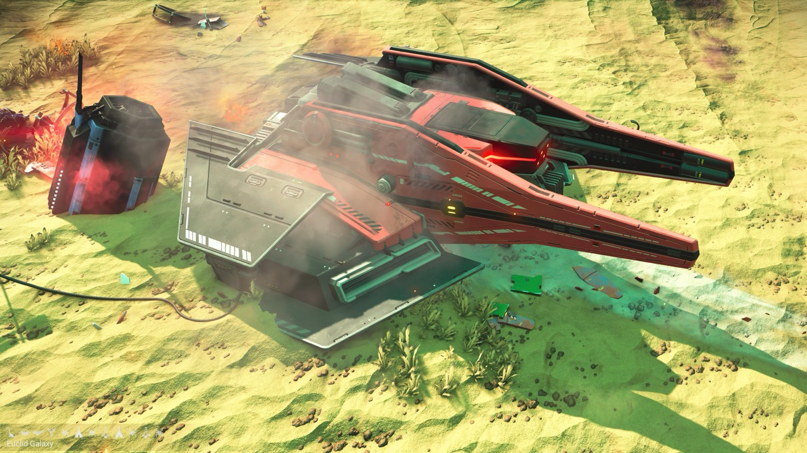
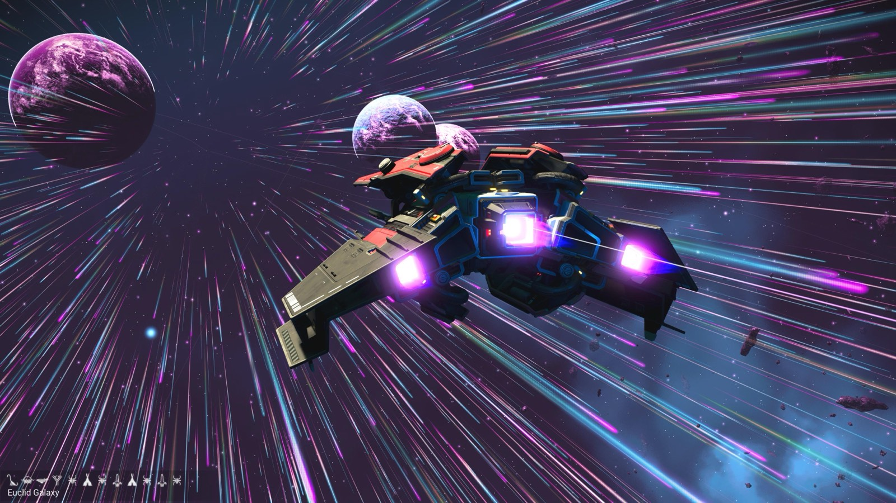
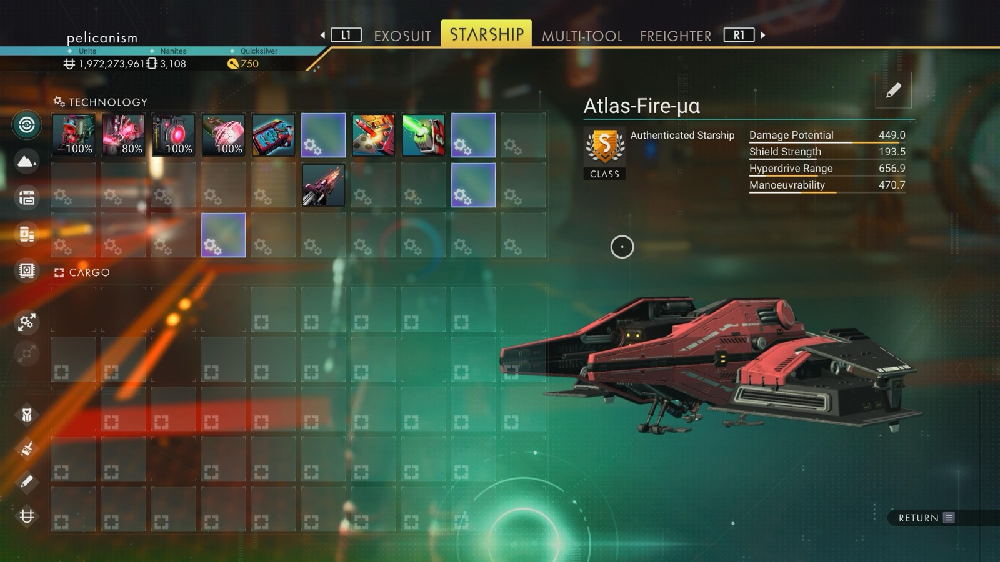

Waypoint 10
Uchuor-Unbun



- Distance from core
- 1,137,740 LY
- Jump from previous
- 1,867 LY
- Planet coordinates
- -37.78, +59.85
- Ship as found
- A-class, 39+28 slots
- S-class ship
- Atlas-Fire-μα
- Damage
- 449.0
- Shield
- 193.5
- Hyperdrive
- 656.9
- Manoeuvrability
- 470.7